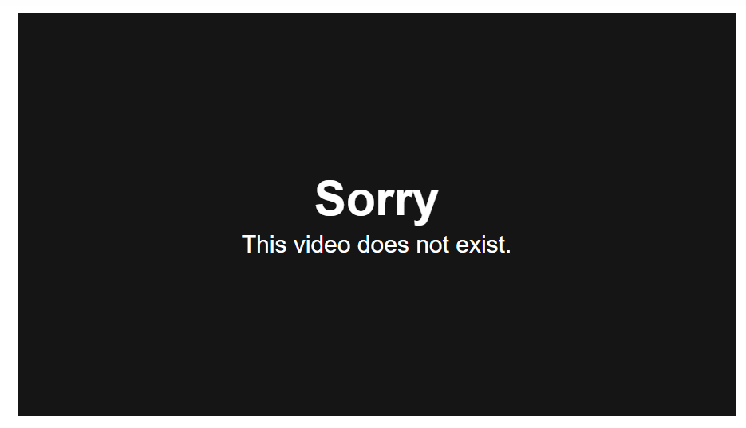

Whether you’re a startup, a small business, an agency, or a brand, there’s always such value to be had in going to the drawing board with social media marketing.
Setting a mission.
Defining goals.
Choosing the tools and workflows that’ll get you there.
Campaign Monitor, a simple email marketing solution for businesses and professionals, has taken this bottom-up approach to building a social strategy. And we’re honored to share how they’ve done it.
Campaign Monitor is a fast-growing, industry-leading company with some really incredible ideas on growth and strategy. Their marketing team, which has grown to five times the size in just over eight months, has the awesome privilege of sharing the email marketing message with others via a big number of different channels, social media included, and has just undergone this very exercise of hitting the drawing board and coming up with a rockin’ new plan.
Here’s a bit more about how Campaign Monitor redefining their social media strategy in light of their new ambitions, and how social management tools like Buffer fit into their daily workflow.

Defining the purpose of social media:
"At the highest level, we use social to improve awareness and to drive traffic.
"
Aaron Beashel, Marketing Executive at Campaign Monitor, has the wonderful chance to lead the team that leads social media. And their recent focus has aligned around this purpose:
Campaign Monitor sees social media fitting within the acquisition funnel, right at the top, where visitors will move from website to signup to sending an email to becoming a paying a customer …

… and social media will be one of the keys to kicking off the customer flow.

It’s a funnel shared by a lot of inbound marketers (channels like content marketing, video, PR, and others also serve to meet similar top-of-funnel goals). And placing social at the top works to serve the overall goals quite well: The main goal of clicks will kick off the flow of traffic into the funnel, and failing traffic, social can raise awareness by helping Campaign Monitor get in front of the right audiences at the places they hang out anyway (Twitter, Facebook, etc.).
The billion-dollar question: What to share?
And a million-dollar followup: How to share it?
This is a part of building a social media strategy that can sometimes get skipped. Once you decide on the Why of social media, it’s time to answer the What.
What kind of content do you want filling your queues and permeating your feeds?
This is exactly the type of question Aaron and the Campaign Monitor team sought to solve:
"We had a bunch of internal discussions around do we share other stuff for marketers in addition to email marketing? Do we talk about other things for marketers, like social media, how to get more clicks on your tweets, or how to design a really great landing page, just general stuff that marketers care about outside of email? We know our designers aren’t just email marketers. They’re marketers doing everything and email just happens to be one of the things that they’re doing.
But we, from a positioning perspective, wanted to be known as the email marketing experts, since our product is obviously an email marketing tool. So for that reason, we made the decision to stick to talking about email marketing best practices."

Want more traffic and better results from social media?
Start my free trial
Campaign Monitor uses Buffer for Business to manage its social media profiles, share multiple times a day (without having to think about it), and work together to identify the content that works and what to share again and again.